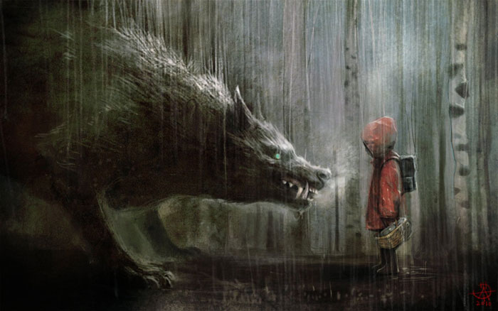

|
Once upon a time there was a dear little girl who was loved by every one who looked at her, but most of all by her grandmother, and there was nothing that she would not have given to the child. Once she gave her a little cap of red velvet, which suited her so well that she would never wear anything else; so she was always called "Little Red-Cap." One day her mother said to her, "Come, Little Red-Cap, here is a piece of cake and a bottle of wine; take them to your grandmother, she is ill and weak, and they will do her good. Set out before it gets hot, and when you are going, walk nicely and quietly and do not run off the path, or you may fall and break the bottle, and then your grandmother will get nothing; and when you go into her room, don't forget to say, 'Good-morning,' and don't peep into every corner before you do it." "I will take great care," said Little Red-Cap to her mother, and gave her hand on it. The grandmother lived out in the wood, half a league from the village, and just as Little Red-Cap entered the wood, a wolf met her. Red-Cap did not know what a wicked creature he was, and was not at all afraid of him. "Good-day, Little Red-Cap," said he. "Thank you kindly, wolf." "Whither away so early, Little Red-Cap?" "To my grandmother's." "What have you got in your apron?" "Cake and wine; yesterday was baking-day, so poor sick grandmother is to have something good, to make her stronger." "Where does your grandmother live, Little Red-Cap?" "A good quarter of a league farther on in the wood; her house stands under the three large oak-trees, the nut-trees are just below; you surely must know it," replied Little Red-Cap. The wolf thought to himself, "What a tender young creature! what a nice plump mouthful---she will be better to eat than the old woman. I must act craftily, so as to catch both." So he walked for a short time by the side of Little Red-Cap, and then he said, "See Little Red-Cap, how pretty the flowers are about here---why do you not look round? I believe, too, that you do not hear how sweetly the little birds are singing; you walk gravely along as if you were going to school, while everything else out here in the wood is merry." Little Red-Cap raised her eyes, and when she saw the sunbeams dancing here and there through the trees, and pretty flowers growing everywhere, she thought, "Suppose I take grandmother a fresh nosegay; that would please her too. It is so early in the day that I shall still get there in good time;" and so she ran from the path into the wood to look for flowers. And whenever she had picked one, she fancied that she saw a still prettier one farther on, and ran after it, and so got deeper and deeper into the wood. Meanwhile the wolf ran straight to the grandmother's house and knocked at the door. "Who is there?" "Little Red-Cap," replied the wolf. "She is bringing cake and wine; open the door." "Lift the latch," called out the grandmother, "I am too weak, and cannot get up." The wolf lifted the latch, the door flew open, and without saying a word he went straight to the grandmother's bed, and devoured her. Then he put on her clothes, dressed himself in her cap, laid himself in bed and drew the curtains. Little Red-Cap, however, had been running about picking flowers, and when she had gathered so many that she could carry no more, she remembered her grandmother, and set out on the way to her. She was surprised to find the cottage-door standing open, and when she went into the room, she had such a strange feeling that she said to herself, "Oh dear! how uneasy I feel to-day, and at other times I like being with grandmother so much." She called out, "Good morning," but received no answer; so she went to the bed and drew back the curtains. There lay her grandmother with her cap pulled far over her face, and looking very strange. "Oh! grandmother," she said, "what big ears you have!" "The better to hear you with, my child," was the reply. "But, grandmother, what big eyes you have!" she said. "The better to see you with, my dear." "But, grandmother, what large hands you have!" "The better to hug you with." "Oh! but, grandmother, what a terrible big mouth you have!" "The better to eat you with!" And scarcely had the wolf said this, than with one bound he was out of bed and swallowed up Red-Cap. When the wolf had appeased his appetite, he lay down again in the bed, fell asleep and began to snore very loud. The huntsman was just passing the house, and thought to himself, "How the old woman is snoring! I must just see if she wants anything." So he went into the room, and when he came to the bed, he saw that the wolf was lying in it. "Do I find thee here, thou old sinner!" said he. "I have long sought thee!" Then just as he was going to fire at him, it occurred to him that the wolf might have devoured the grandmother, and that she might still be saved, so he did not fire, but took a pair of scissors, and began to cut open the stomach of the sleeping wolf. When he had made two snips, he saw the little Red-Cap shining, and then he made two snips more, and the little girl sprang out, crying, "Ah, how frightened I have been! How dark it was inside the wolf;" and after that the aged grandmother came out alive also, but scarcely able to breathe. Red-Cap, however, quickly fetched great stones with which they filled the wolf's body, and when he awoke, he wanted to run away, but the stones were so heavy that he fell down at once, and fell dead. Then all three were delighted. The huntsman drew off the wolf's skin and went home with it; the grandmother ate the cake and drank the wine which Red-Cap had brought, and revived, but Red-Cap thought to herself, "As long as I live, I will never by myself leave the path, to run into the wood, when my mother has forbidden me to do so." * * * * * * *It is also related that once when Red-Cap was again taking cakes to the old grandmother, another wolf spoke to her, and tried to entice her from the path. Red-Cap, however, was on her guard, and went straight forward on her way, and told her grandmother that she had met the wolf, and that he had said "good-morning" to her, but with such a wicked look in his eyes, that if they had not been on the public road she was certain he would have eaten her up. "Well," said the grandmother, "we will shut the door, that he may not come in." Soon afterwards the wolf knocked, and cried, "Open the door, grandmother, I am little Red-Cap, and am fetching you some cakes." But they did not speak, or open the door, so the grey-beard stole twice or thrice round the house, and at last jumped on the roof, intending to wait until Red-Cap went home in the evening, and then to steal after her and devour her in the darkness. But the grandmother saw what was in his thoughts. In front of the house was a great stone trough, so she said to the child, "Take the pail, Red-Cap; I made some sausages yesterday, so carry the water in which I boiled them to the trough." Red-Cap carried until the great trough was quite full. Then the smell of the sausages reached the wolf, and he sniffed and peeped down, and at last stretched out his neck so far that he could no longer keep his footing and began to slip, and slipped down from the roof straight into the great trough, and was drowned. But Red-Cap went joyously home, and never did anything to harm any one. |
TL;DR:https://owlcation.com/misc/red_riding_hood Once upon a time, there was a little girl. Her grandmother gave her a red riding hood, and the girl loved it so much she wore it all the time. So, everybody started to call her "Little Red-Cap."One day, her mother told the girl her grandmother fell ill. Because she lived alone deep in the woods, she would probably be happy to get some food. Then her mother gave a basket with food and a bottle of wine to Little Red-Cap and told her, "Don't stray from the path!" The girl promised but soon forgot about her mother's warning. After a while, she met a wolf in the woods. He asked her where she was going and she told him about her granny's bad health and where she lives. Delighted, the wolf tricked her to stop and pick some flowers. She did just that and in the meantime, the wolf ran to the granny's house. The wolf, pretending to be her granddaughter, entered the grandmother's house and ate the grandmother. Then he dressed in her nightgown and waited for Little Red-Cap.When she came in, the famous dialogue about great arms, great ears, and great teeth followed. After that the wolf ate the girl and took a nap. Soon after a huntsman came by the house and heard snoring. He entered cautiously, saw the sleeping monster in granny's bed and guessed what happened. Then he opened sleeping wolf's stomach with a knife.Granny and Little Red-Cap came out and helped the huntsman to fill wolf's stomach with stones. When the wolf woke up, he tried to run away, but the stones were too heavy. He fell down and died. Grandmother, granddaughter, and huntsman lived happily ever after.  |